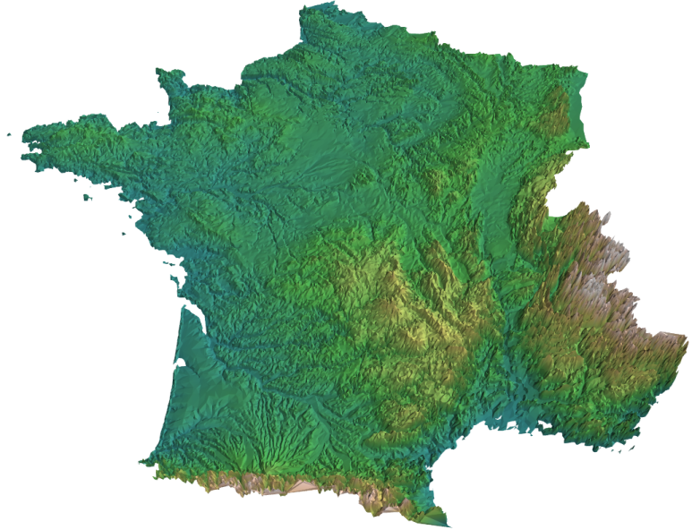

Mayavi uses VTK as a rendering engine. It does its best not to force you to learn anything about VTK, and I often forget about the infinite possibilities of this visualization toolkit, but sometimes it can be interesting to actually look at bit more at its data processing algorithms to make a nice visualization.
Lately I was trying to get a 3D view of France, using altitude measurements that can be freely downloaded on the IGN website. The shear number of points is huge: one point every kilometer, on the whole French territory. As a result, the brute force approach does not work, and Prabhu hinted I could look at VTK filters to make a good use of this data.
VTK, and thus Mayavi, uses a pipeline-oriented approach: the data is loaded by a data source, and it is plotted using one or more visualization modules. Between the source and the modules, we can insert filters, that can process and transform the data. Playing with this pipeline I was able to transform the set of 800 000 (yes, that’s 800 000!) altitude measurements, given as (latitude, longitude, elevation) into an optimized mesh small-enough to display fluidly on my laptop. Let’s see how I did it.
First of all I have to load the data, and I create a set of scattered (non-grided) 3D points. This I do with numpy and mlab’s scatterscalar function.
Then I want to add connectivity information to go from scattered points to a field. This I do with a Delaunay2D VTK filter. This gives me a mesh that I can display with the surface visualization module. But if I do this, my computer grinds to a halt. Remember, I am dealing with 800 000 data points. It is interesting to note that VTK is a pipeline, data-on-demand, type of rendering architecture: the delaunay filter, for instance, will process data only as it is required by the rendering. Thus adding a delaunay tessellation filter is a numerically very cheap operation, as long as no visualization module is pulling the data out (think generator/lazy-evaluation pattern).
The first simplification I make to the mesh is simply to remove mesh faces outside the French border. For this I have added points outside France with negative scalar value, and I use altitude as a scalar value for the points given by the IGN data. I want to use the Threshold filter to filter out the cells with scalar data equal or less than zero (this way I also filter out the sea). As I want to act on cells rather than vertexes, I have first to use convert the scalar data, located on the data points, to cell data, using the PointToCellData filter.
Then I use the QuadricDecimation filter to simplify my mesh. This filter finds a good approximation of the mesh with less faces. Unfortunately I also loses track of the scalar data attached to my mesh. As I am interested in having a scalar reflecting altitude, in order to associate a pleasing color with it, I rebuild this scalar using the ElevationFilter filter.
{kind=link}
I find the result very pleasing: the mesh simplification is very impressive, because it yields a good rendering of the landscape with little faces. For example, the triangles around a river are elongated and follow it. I tried playing around with the data using numpy and writing my own algorithms (binning, averaging, …) and I didn’t get as good results, obviously because these algorithms have not been developed during an evening’s hack. The resulting visualization takes a long time to load, probably because the QuadricDecimation filter is busy doing its work.
To sum up the pipeline used:
- Delaunay2D to create connectivity information,
- Threshold to remove what lies outside France
- QuadricDecimation to simplify the mesh
and a few filters to do conversion/creation of different data type. The mlab code to generate this visualization can be found in the Mayavi2 example directory (currently onhttps://svn.enthought.com/enthought/browser/Mayavi/branches/enthought.mayavi_2.1.0/examples/france.py but the branch will soon move to a tag as we do a release).
Edit: Indeed, the release has happened and as Fred points out, the correct link is
https://svn.enthought.com/enthought/browser/Mayavi/tags/enthought.mayavi_2.1.1/examples/france.py
I had fun zooming with this visualization and exploring France. I can say that this doesn’t compare to well with Google Earth: these guys pull tricks like detailed textures attached to the mesh or level of detail adaptation of the mesh depending on the distance to the camera. Yeah, Mayavi is a general-purpose 3D visualization software, and you can already go pretty far quite quickly, but if you want to do better, you’ll have to get your hands dirty.
Go Top